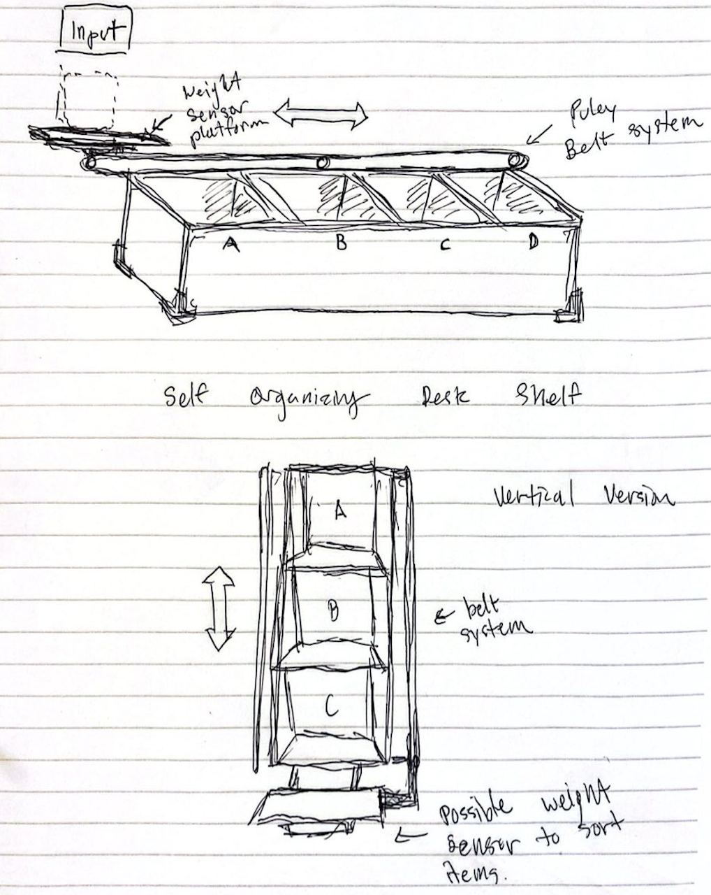
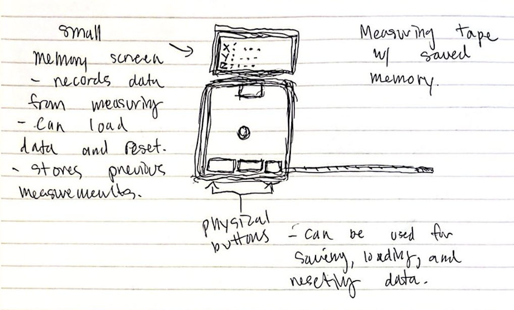
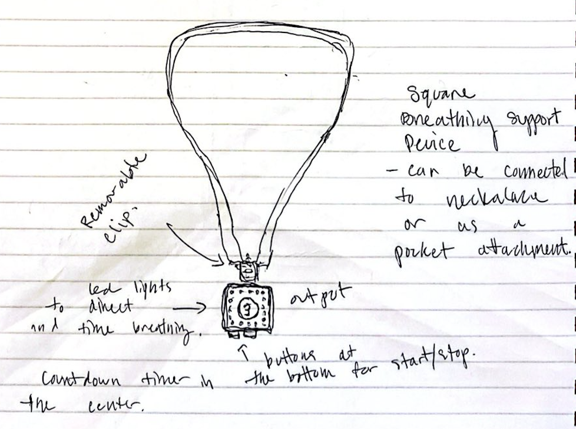

During our first week, we brainstormed three potential ideas for our final project. We also had a lab tour followed by a scavenger hunt.

I often find my desk or workspace very disorganize, where michelaneous items such as pens, notes, and paperclips are scattered across. To resolve this issue, I thought about a device that can help me organize my items by simply placing in one place and it will rearrange itself. I was inspired by large machines in factories where they can sort packages by weight. I think my product will take on a shelf shape and have a single dimension puley system to move items around. The input will be the weight it takes in for data. I plan to have a spreadsheet that keeps track of the weight of specific items in order for the system to recognize what items should be sorted.

One of my hobbies is to design and sell clothing online. The whole process requires constantly measuring fabric and a lot of clothing items for both manufacturing and listing purpose. During this process, I would measure and take down data one at a time which can get repetitive. I thought of a measuring tape that can store data of measured items. I think this device can help me speed up my process and make it less iterative.

For my third idea, I thought about meditative breathing to help with stress or as a recovery process which is an idea from a book I read in the past. Breathing is a very important component in our health and I think sometimes it is overlooked. The product idea I thought is a small fidget that can be worn as a necklace or as a keychain that will help with meditative breathing through having guidence with time and audio cue.